Level 2.5, younger clients, star
Level 2.5, younger clients, 50 min. Peak: Star
1. Footwork6 min, Standing (no equipment)
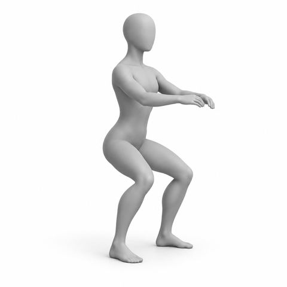
Standing foot warm-up2 min, x8 ea move
Stand tall, feet hip wd; Toe lifts, heel lifts, small plie; Weight even on both feet
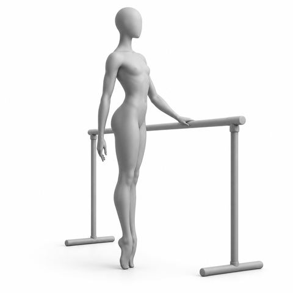
Standing heel raises in turnout2 min, x10
Heels together, toes apart; Rise up, squeeze inner thighs; Lower slow, hand on support

Standing heel raises2 min, x10
Stand tall, hand on frame if needed; Rise to balls of feet; Lower slow
2. Bridging4 min, Chair
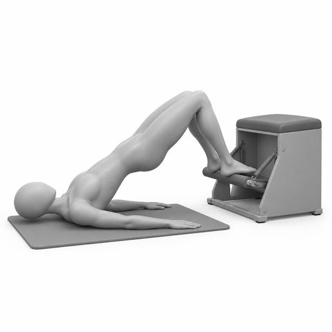
Bridge with feet on the pedal2 min, x8
Lie on mat, feet on pedal; Lift hips, press pedal; Hips high, lower slow
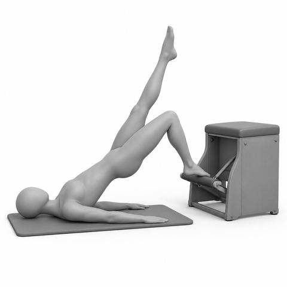
Single leg bridge on the pedal2 min, x6 ea
One foot on pedal, other leg up; Lift hips, press pedal; Hips level, switch
3. Abs5 min, Chair
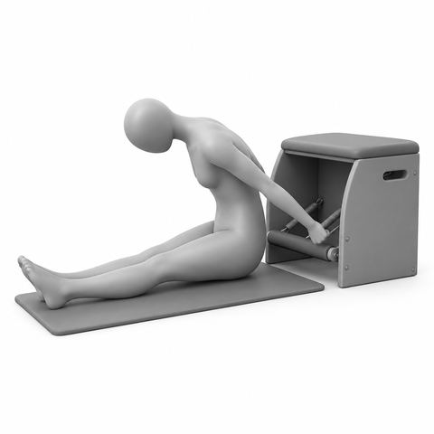
Torso press sitting1½ min, x6
Sit on mat, back to chair; Hands on pedal behind; Round forward, press down

Spine stretch at the pedal1½ min, x5
Sit on mat facing chair, legs wide; Hands on pedal, round forward; Press down, stack up
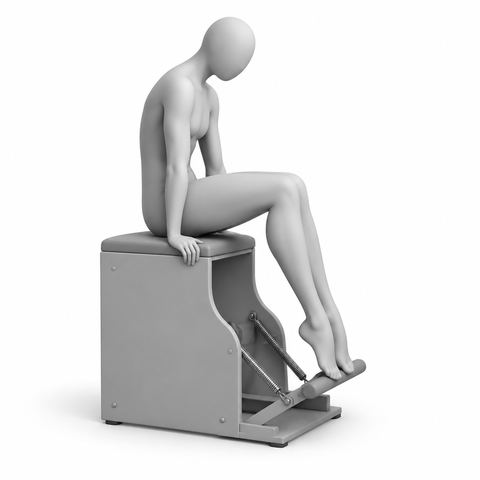
Seated pike press2 min, x6
Sit on seat, hands beside hips; Feet on pedal, round back; Press pedal, lift through abs
4. Lower body6 min, Reformer
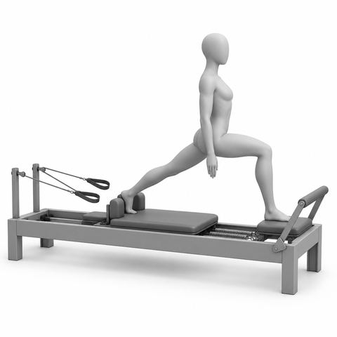
Front splits1½ min, x6 ea
Front foot on plat, back foot on carr; Slide back leg away; Hips square, return slow

Scooter1½ min, x10 ea
Hands on FB, one knee on carr; Standing leg soft on floor; Push carr back w/ bent leg
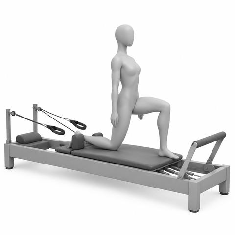
Kneeling lunge1½ min, x8 ea
Front foot on plat, back knee on carr; Slide back knee away; Tall spine, return slow
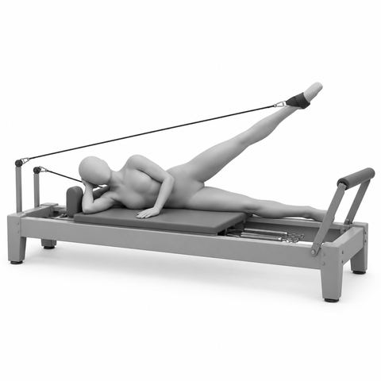
Side-lying leg in strap1½ min, x10 ea
Lie on side, top foot in strap; Lift and lower top leg; Hips stacked, long waist
5. Upper body6 min, Reformer

Kneeling biceps1½ min, x10
Kneel tall facing straps; Arms at shoulder height; Curl to temples, elbows high
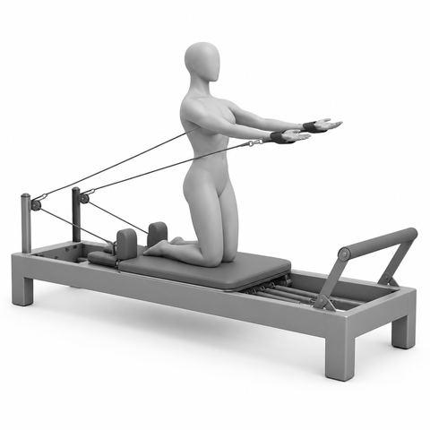
Kneeling serve a tray1½ min, x8
Kneel tall, back to straps; Palms up, press forward; Ribs down, slow return

Kneeling side arm1½ min, x8 ea
Kneel sideways, one strap; Pull arm down to side; Hips stacked, long waist

Incline push-ups on the footbar1½ min, x8
Stand, hands on FB, step back; Long line head to heels; Bend elbows, press away
Second half
From minute 27. 1 equipment changes, 10 spring changes
6. Side and lateral work4 min, Reformer

Side support on the reformer1 min, x5 ea
One hand on FB, side to bar; Feet stacked on carr edge; Press carr out, lift hips

Mermaid1½ min, x4 ea
Side sit, near hand on FB; Push carr out, arm overhead; Long side bend, return

Mermaid with twist1½ min, x3 ea
Side sit, push carr out; Turn chest to FB, hands on bar; Lengthen, unwind, return
7. Full body integration7 min, Reformer

Teaser on the reformer1½ min, x4
Hold straps, legs long at angle; Roll up to V balance; Roll down bone by bone
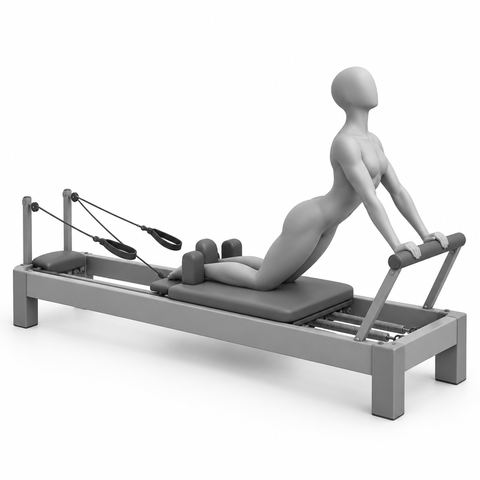
Down stretch1 min, x5
Kneel, knees on carr, hands on FB; Lift chest, push carr back; Long arch, pull in
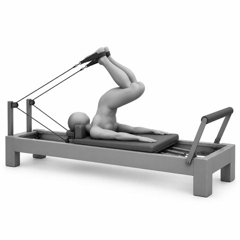
Short spine1½ min, x4
Feet in straps, legs long; Lift hips over, bend knees; Roll down (art), extend
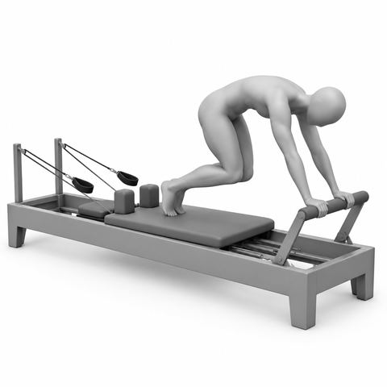
Knee stretches: knees off1½ min, x10
Hands on FB, knees hover; Small fast presses; Shoulders over wrists
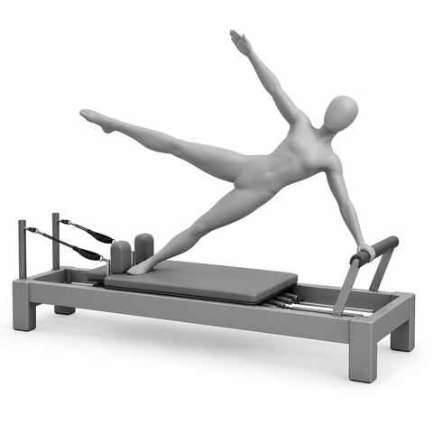
Star1½ min, x4 ea
Side plank, hand on FB; Lift top leg and arm; Press carr out, long line
8. Prone work for the spine4 min, Reformer

Bird dog on the carriage1 min, x5 ea
Hands on FB, knees on carr; Reach one leg back long; Hips level, switch

Cat and cow on the carriage1½ min, x5
Hands and knees, hands on FB; Round up, then lengthen; Slow with breath

Quadruped hold on the carriage1½ min, 5 slow breaths x3
Knees on carr, hands on FB; Long flat back; Tiny press back, hold, return
9. Stretch4 min, Reformer

Footwork: calf stretch under the bar1 min, 3 slow holds
Legs long, heels under FB; Hold 3 breaths, lift, repeat; Soft knees if tight

Figure 4 stretch, foot on footbar1½ min, 3 breaths ea
One foot on FB; Cross ankle over knee; Bend in a little, switch

Standing hinge at the footbar1½ min, x6
Stand, hands on FB; Walk back, hinge to flat back; Long spine, soft knees
10. Closing pull down and wind down4 min, Reformer

Seated breathing, arms circle1 min, x5
Sit tall on carr; Inh, arms float up; Exh, arms float down

Seated spine stretch on the carriage1½ min, x4
Sit tall facing FB, legs wide; Hands on FB, round forward; Stack up tall
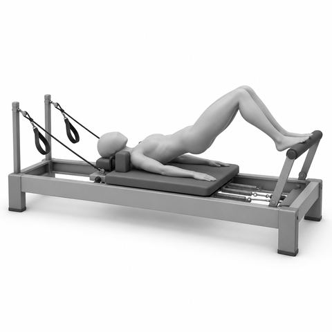
Pelvic tilts on the carriage1½ min, x8
Arches on FB, neut; Exh, imp, Inh neut; Slow, easy breath
Key. FB Footbar; carr Carriage; plat Platform; V Pilates V, heels together, toes apart; neut Neutral pelvis and spine; imp Imprint, low back gently toward the mat; ea Each side; x Repetitions, so x8 means 8 times; Inh Inhale; Exh Exhale; w/ With; hip wd Hip width apart; art Articulate, one bone at a time. Springs: red heavy, blue medium, yellow light. Older clients start lighter. Springs as listed. Go heavier or lighter to add challenge.